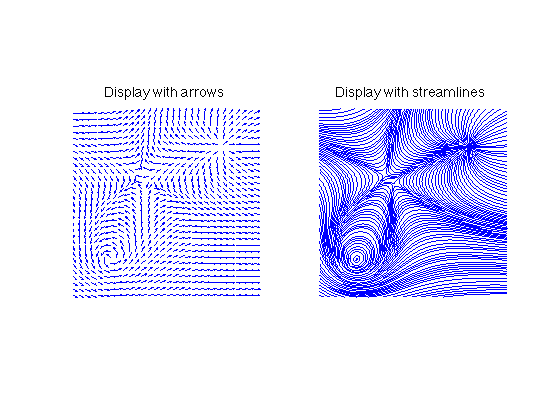
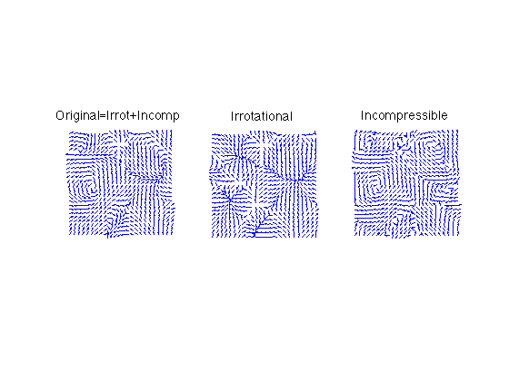
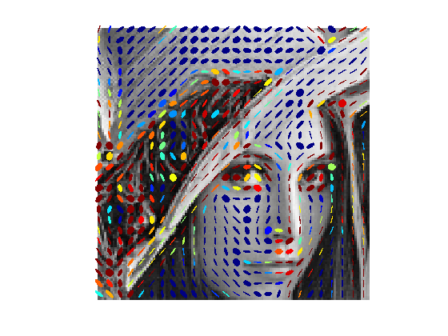
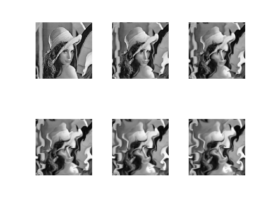
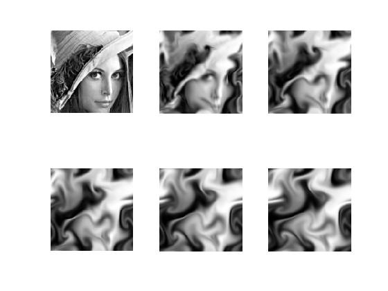

Toolbox differencial calculus - A toolbox to handle differential operators
Copyright (c) 2008 Gabriel Peyre
Contents
The toolbox can be downloaded from Matlab Central http://www.mathworks.com/matlabcentral/fileexchange/loadFile.do?objectId=5103&objectType=FILE
First add to the path additional scripts.
path(path, 'toolbox/'); clear options;
Vector Fields
A vector field v is an array of dimension (n,m,2), and v(:,:,1) is the x component of the field, while v(:,:,2) is the y component
We can create synthetic fields with sources and vortices.
n = 150; % size of the field v = load_flow('mixed', n); % normalize it v = perform_vf_normalization(v); % display it options.subsampling = 5; clf; subplot(1,2,1); options.display_streamlines = 0; plot_vf( v, [], options ); title('Display with arrows'); axis tight; subplot(1,2,2); options.display_streamlines = 1; plot_vf( v, [], options ); axis xy; axis equal; title('Display with streamlines'); axis tight;
One can separate a vector field into a sum of incompressible flow and irrotional flow.
% create a random flow n = 100; options.bound = 'per'; v = randn(n,n,2); v = perform_vf_normalization( perform_blurring(v,50) ); % compute the Hodge decomposition [v1,v2] = compute_hodge_decompositon(v,options); % display options.subsampling = 4; options.display_streamlines = 0; options.normalize_flow = 1; options.lgd = { 'Original=Irrot+Incomp' 'Irrotational' 'Incompressible' }; plot_vf( {v v1 v2}, [], options );
Tensor Fields
A tensor field T is an array either of size (n,m,2,2), then T(:,:,i,j) are the component along axis i and j of the tensor, or an array of size (n,m,3), where we have exploited the fact that the tensor is symmetric.
We can compute the structure tensor of an image, which is derived by avergaging the tensor product of the gradient with it self.
First we load an image.
n = 128;
M = load_image('lena',256);
M = rescale(crop(M,n));
Then we compute the structure tensor, and display it. Each tensor is displayed with a small ellipsoid, whose direction matches the direction of the tensor, and color (blue to red) matches its size.
% compute the structure tensor, using an averaging of 8 T = compute_structure_tensor(M,1.5,8); % we cheat a little for the display, we rescale the tensor field U = perform_tensor_mapping(T,+1); U(:,:,1) = perform_histogram_equalization(U(:,:,1), 'linear'); T1 = perform_tensor_mapping(U,-1); % Display the tensor fields. The color is proportional to the size of the tensor. clf; options.sub = 5; plot_tensor_field(T1, M, options);
Image Advection and Fluid Dyamics
You can compute various things from an image along a vector field.
Load an image and create a random smooth vector field.
n = 256; M = load_image('lena',n); options.bound = 'per'; v = perform_blurring(randn(n,n,2), 40, options); [tmp,v] = compute_hodge_decompositon(v,options); v = perform_vf_normalization(v);
One can perform iterative image advection.
dt = .7; niter = 30;
Ma = M; Msvg = {};
for i=1:niter
Ma = perform_image_advection(Ma, dt*v, options);
if mod(i,5)==1
Msvg{end+1} = Ma;
end
end
% display
clf;
imageplot(Msvg);
 One can solve the Navier Stockes equations for incompressible fluids starting from an image.
n = 128; M = load_image('lena',256); M = rescale(crop(M,n)); % initial flow v = perform_blurring(randn(n,n,2), 40, options); [tmp,v] = compute_hodge_decompositon(v,options); v = perform_vf_normalization(v); % options for the PDE solver dt = .3; options.viscosity = 2*dt; % diffusion per frame options.advspeed = 1*dt; % advection per frame options.viscosity_texture = .3*dt; % diffusion of the texture options.texture_histo = 'linear'; % fix the contrast options.display = 0; options.niter_fluid = 100; % solve the PDE [vlist,A] = perform_fluid_dynamics(v,M,options); % display sel = round( linspace(1,size(A,3),6) ); B = mat2cell(A(:,:,sel),n,n,ones(6,1)); clf; imageplot(B);
One can perform Line Integral Convolution (LIC), see my image processing toolbox for more information.